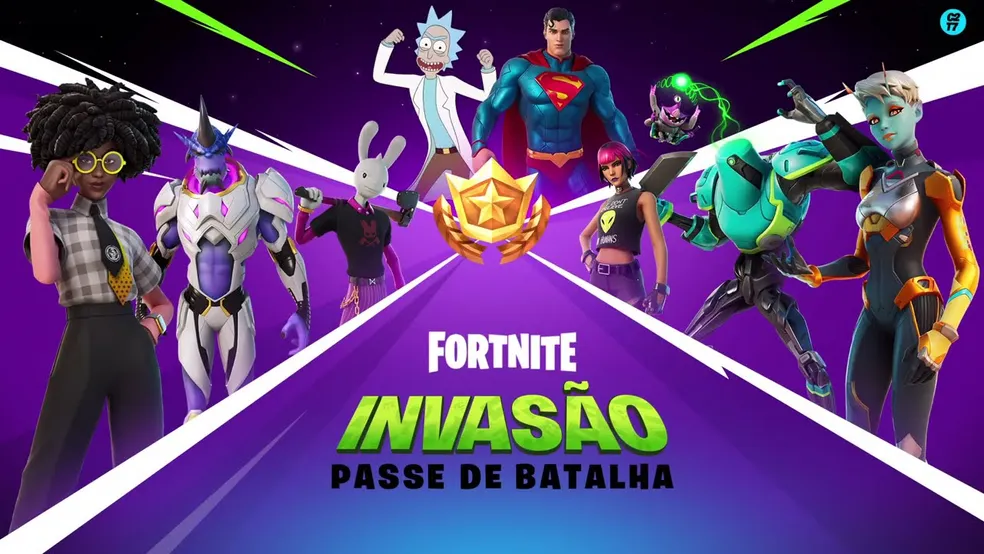

O Passe de Batalha em Fortnite é um sistema de progressão e recompensas que os jogadores podem adquirir para desbloquear conteúdo exclusivo ao longo de uma temporada. Ao comprar o Passe de Batalha, os jogadores têm acesso a uma variedade de recompensas, como skins, envelopamentos, emotes, picaretas e outras customizações cosméticas. A progressão no Passe de Batalha é feita através da obtenção de experiência em partidas e da conclusão de desafios específicos da temporada. Conforme os jogadores sobem de nível no Passe de Batalha, eles desbloqueiam mais itens e recompensas, incentivando-os a continuar jogando e explorando todas as possibilidades oferecidas pela temporada atual. O Passe de Batalha é uma forma de os jogadores mostrarem seu progresso e dedicação dentro do jogo, além de proporcionar uma experiência de jogo mais envolvente e recompensadora.
Voltar